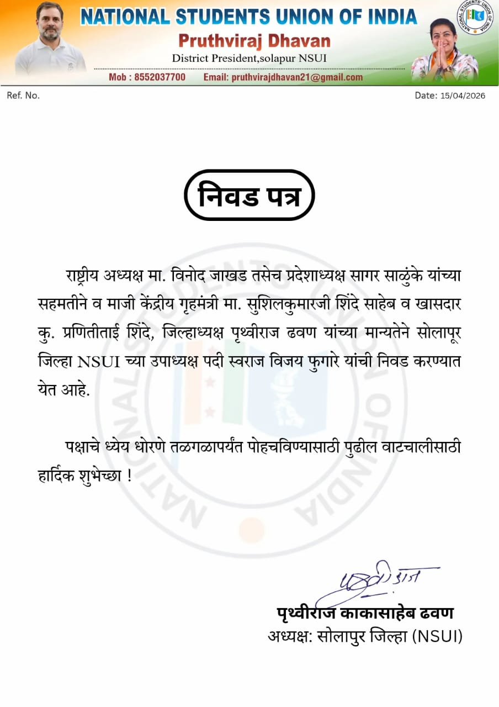
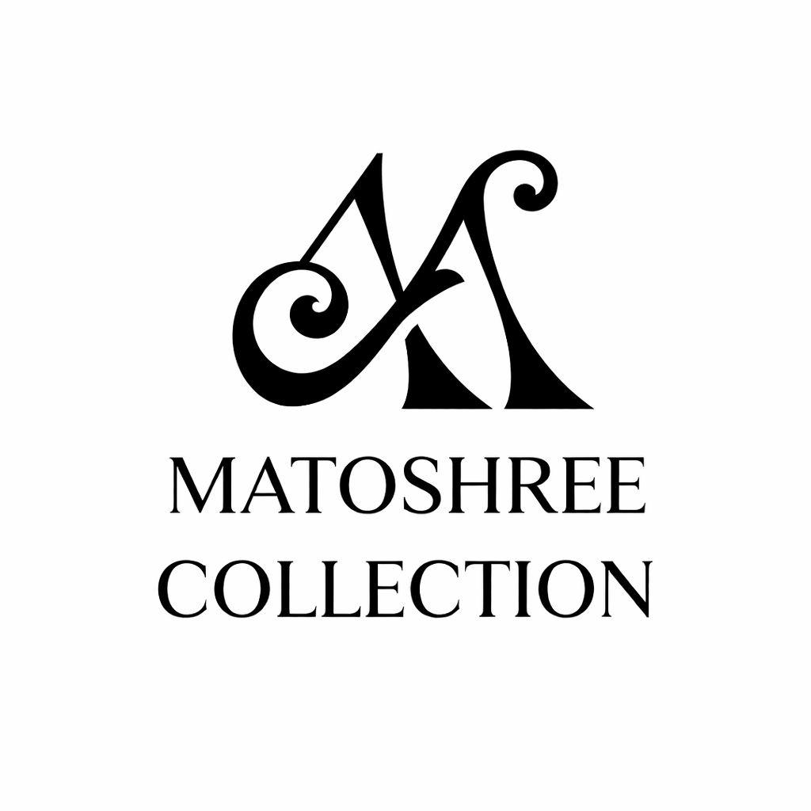

Engineer
B.Tech Civil Engineering student at SKN Sinhgad College of Engineering, Korti-Pandharpur.
Official portfolio
Civil engineering student, NSUI Vice President of Solapur District, GitHub builder, and entrepreneur behind Matoshree Collection.
Identity
Swaraj's profile combines civil engineering education, practical digital projects, social media handling, public speaking, and the owner role at Matoshree Collection.
B.Tech Civil Engineering student at SKN Sinhgad College of Engineering, Korti-Pandharpur.
Owner of Matoshree Collection, an online learning brand for creative skills and women-led growth.
Public GitHub profile with 10 repositories across HTML, Python, bots, and developer tooling concepts.
Appointed Vice President of Solapur District NSUI, highlighted by the official appointment letter dated 15 April 2026.

Leadership update
Swaraj Fugare is now highlighted as Vice President of Solapur District, NSUI. The appointment letter is dated 15 April 2026 and issued under the Solapur District NSUI letterhead.
Featured business
Matoshree Collection offers affordable online classes in Aari Work, Fabric Painting, Resin Art, Candle Making, and more. The brand message is simple: where women learn, earn, and grow.

Creative learning platform with courses for Aari Work, Fabric Painting, Resin Art, Candle Making, and practical skill growth.
Latest GitHub work
The cards below load from the GitHub API and fall back to saved public repository data if the API is unavailable.